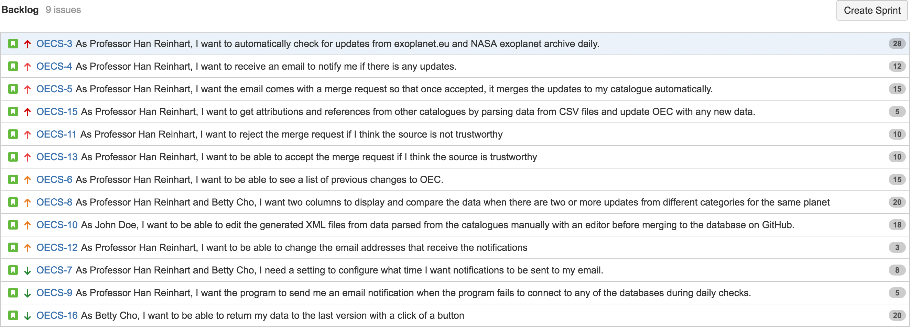
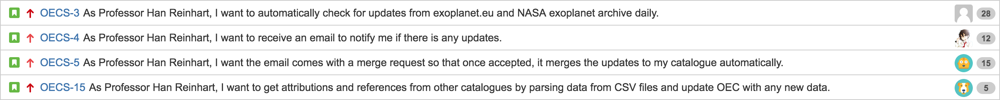
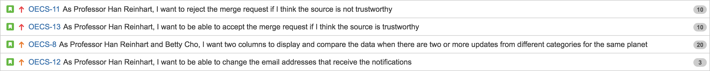
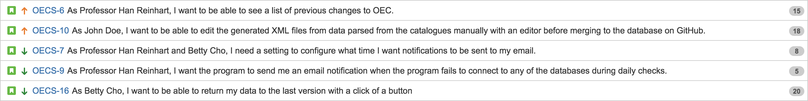
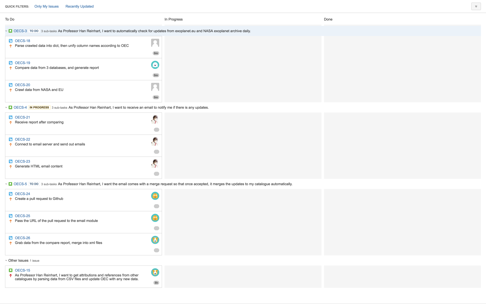
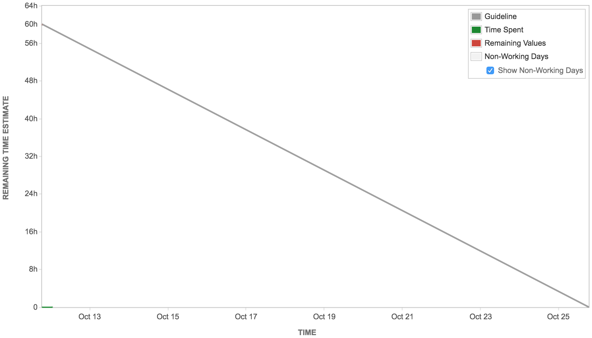
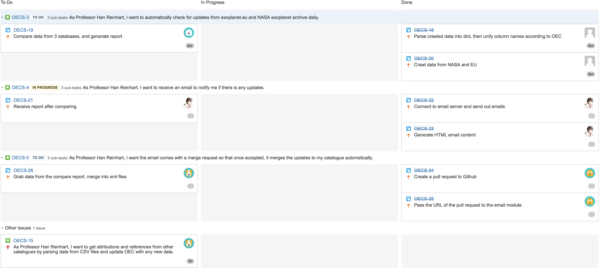

What tools, if any, will you use for your task board?
What tools, if any, will you use for your burn-down chart?
Who will maintain the burn-down chart? How?
- The burn-down chart will be automatically generated by JIRA. Everyone in the team should log working hours in JIRA so it gets the information it needs for generating the burn-down chart.
What is every team member’s role?
- Andrew Wang: meeting organizer, master branch maintainer, developer
- Ryan You: full-stack developer
- Rose Gao: writer, proofreader, developer
- Andrew Huang: back-end developer
- Wentao Sui: back-end developer
What tools, if any, will you use for communication?
- Skype, Wechat, Google Docs and phone.
When do you plan to meet in person?
- We have team members with different tight schedules, so we primarily have meetings online using Skype.
How will you use your repository on GitHub?
- We will use of Github branch feature so that everyone in the team will create a own branch on the team project working directory.
Which machines will be used for development by each team member? E.g., the lab machine, a Linux laptop, a Windows home computer, etc.
- Andrew Wang: a MacBook Pro with Linux virtual machine installed.
- Ryan You: Windows and Macbook
- Rose Gao: a Windows laptop.
- Andrew Huang: Windows & Linux Laptop, Lab machine
- Wentao Sui: Macbook
Product Backlog

Release Plan
- 10/24/2016: First working version with update checking, comparing and merging abilities.

- 11/14/2016: UI will be added in for accept, reject functionalities and conflict handling.

- 12/01/2016: Major functionalities will include editing before accepting and being able to roll back to a previous version.

Sprint Plan


Who Is Doing What
- Ryan You, Andrew Huang, and Wentao Sui are working on crawling, parsing, and comparing data fetched from NASA and exoplanet.eu with OEC.
- Andrew Wang is working on sending out update notification emails.
- Rose Gao is working on creating Github pull requests.
Report
To achieve the basic requirements, we first have a crawler to crawl through data from two catalogues. It also generates a report and a data file. Then we have a function that creates a pull request on GitHub, and an email sending function that takes the pull request and the report to send to the user. All data should come with attributions and references, so we have another function to get those from other catalogues. Once the email is received, we have two more functions that lets the administrator choose to accept or reject the merge request on GitHub. We also plan to have an editor, which allows the client to edit the generated data file manually, if he would like, before merging into database. We will also implement a function that identifies the data about the same planet from different catalogues and generates two columns to compare and display the data to the client. We will add extra functionalities to the email sending part if we have time that allows users to change the time of the email being sent and also includes an error report when the program fails to connect the databases. Another function that is nice to have is a button in the email that allows the user to go back to the last version of git.
Above is a brief description of our system design. Our project had a smooth transaction from deliverable 2 to deliverable 3. We put our user stories from deliverable 2 into our backlog and have an estimated project velocity of 60 story points(1 story point == 1 dev hour). We followed our plan and finished 39 story points in this sprint. For the one user story that is not finished and some subtasks that do not work yet perfectly we are re-planning them into the next sprint.
Task Board

Burn-down Chart
(The green "Time Spent" line can be ignored.)